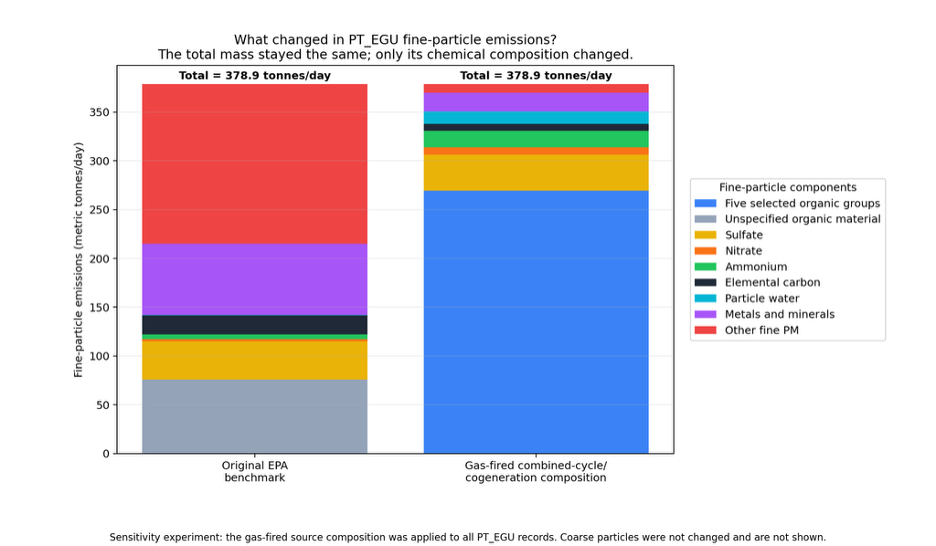
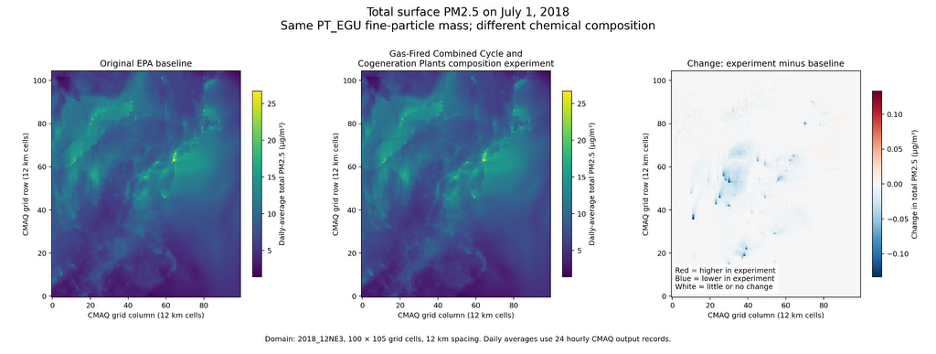
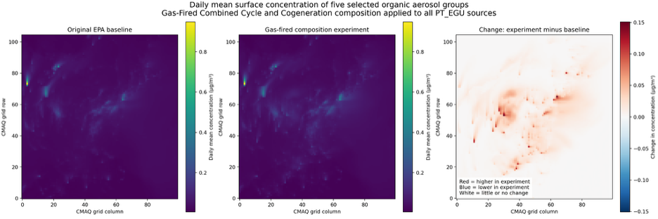

Fine-particle composition sensitivity analysis using EPA SPECIATE, S2S, and CMAQ v5.5.
This project was designed to develop an end-to-end understanding of the EPA SPECIATE database and the Community Multiscale Air Quality (CMAQ) modeling workflow. I selected the SPECIATE profile for gas-fired combined-cycle and cogeneration plants, converted it into CMAQ-compatible model species with the Species-to-Species (S2S) Tool, configured CMAQ v5.5 on an AWS EC2 instance, and conducted a controlled chemical-composition sensitivity experiment.
If PT_EGU fine-particle emissions retain the same source-by-source and hour-by-hour mass but use the EPA SPECIATE profile for gas-fired combined-cycle and cogeneration plants, how does CMAQ's predicted aerosol composition change?
| Model | CMAQ v5.5 |
|---|---|
| Emissions profile | EPA SPECIATE v5.4, profile 5671 |
| Profile processing | S2S Tool with PM-CR2 mapping rules |
| Chemistry | CRACMM2 |
| Deposition | STAGE |
| Domain | 2018_12NE3, 100 × 105 cells at 12 km resolution |
| Simulation | July 1, 2018; 24 hourly records; 35 vertical layers |
| Computing | Ubuntu Linux, OpenMPI, NetCDF, I/O API, and AWS EC2 |
The experiment changed only the chemical composition of PT_EGU fine-particle emissions. Total fine-particle mass, hourly emission patterns, source locations, stack information, meteorology, land-surface data, and initial and boundary conditions were held constant. Both inventories contained approximately 378.9 metric tonnes per day of fine-particle emissions; coarse-particle emissions were not modified.

Domain-average total PM₂.₅ remained essentially unchanged, but individual grid cells showed small spatial responses to the revised composition. Daily-average experiment-minus-baseline differences ranged from approximately −0.133 to +0.019 µg/m³, demonstrating that mass-preserving emissions changes can still alter modeled atmospheric concentrations locally.

The five selected primary-organic aerosol groups increased by approximately 20% in the combined domain-and-hour mean. Their spatial response was much more visible than the change in total PM₂.₅ because the experiment directly redistributed the emitted fine-particle composition toward these organic groups.
